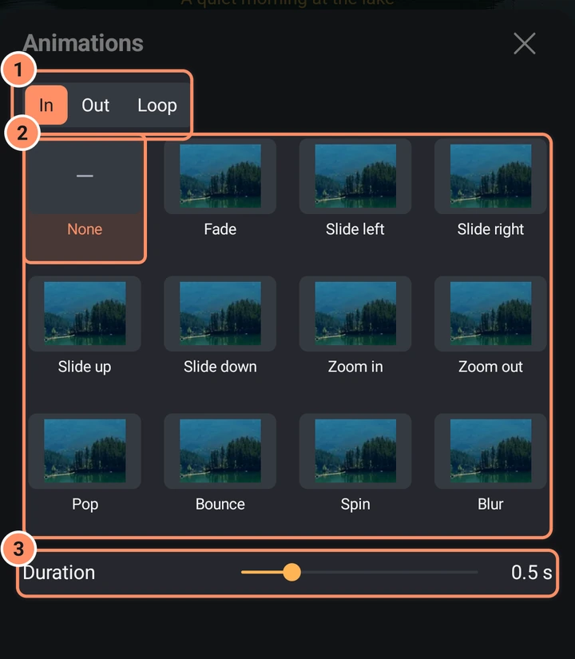

Overgangen en animaties
Overgangen tussen clips met één tik, en In-, Uit- en Lus-animaties voor elke laag.
Beide maken gewone keyframes en effecten die je daarna nog kunt bewerken. Zo kun je ze als startpunt gebruiken.
In-, Uit- en Lus-animaties
- Selecteer een zichtbare laag (geen geluid, camera of null).
- Tik op de ronde knop Animeren rechtsonder in het voorbeeld. Het venster Animaties opent.
- Kies bovenin In, Uit of Lus en daarna een tegel. Geen staat als eerste in het raster.
- Stel de Duur in.


| Animaties | Duur | |
|---|---|---|
| In en Uit | Faden, Naar links schuiven, Naar rechts schuiven, Omhoog schuiven, Omlaag schuiven, Inzoomen, Uitzoomen, Ploppen, Stuiteren, Tollen, Vervaging | 0,1 tot 2 seconden (standaard 0,5) |
| Lus | Pulseren, Wiebelen, Zweven, Draaien | 0,2 tot 4 seconden (standaard 1) |
Een In-animatie komt aan het begin van de clip, een Uit-animatie aan het eind, en een Lus-animatie loopt over de hele clip. Heeft dat uiteinde van de clip al een overgang, dan vervangt de animatie die, en het venster meldt dat.
Overgangen tussen twee clips
Een overgang laat de ene clip overvloeien in de volgende. Je hebt twee zichtbare clips nodig, waarbij de tweede later begint en later eindigt dan de eerste.
- Zet de twee clips zo dat ze elkaar raken of overlappen. Staat de afspeelkop op de knip en is er niets geselecteerd, dan verschijnt rechtsonder in het tijdlijngebied een ronde knop Overgang, net boven de +-knop. Of selecteer de twee clips en tik in de balk onderaan op Overgang tussen de twee clips toevoegen.
- Het venster Overgang toont "Clip A naar clip B" en een raster met overgangen, met Geen als eerste.
- Kies er een en stel de Duur in (0,1 tot 2 seconden, standaard 0,5).


Beschikbare overgangen: Overvloeien, Via zwart, Via wit, Naar links schuiven, Naar rechts schuiven, Omhoog schuiven, Omlaag schuiven, Duwen naar links, Duwen naar rechts, Duwen omhoog, Duwen omlaag, Veeg naar rechts, Veeg naar links, Veeg omhoog, Veeg omlaag, Klokveeg, Inzoomen, Uitzoomen, Tollen, Vervaging, Gloed, Draaikolk, Snelle pan, Glitch, Flitser, Schudden, Pixeleren en Overvloeien met ruis. Duwen, Inzoomen, Uitzoomen en Tollen hebben bewegingsonscherpte. Het raster scrolt: veeg omhoog om de laatste te zien.

Overlappen de clips niet genoeg, dan verplaatst of verkort de app ze en laat je dat weten, bijvoorbeeld "... naar voren verplaatst zodat de clips overlappen." en "Ingekort tot 0,5 s zodat het in de clips past." Geluids-, camera- en null-lagen kunnen geen overgangen hebben.
Zit de knop Overgang in de weg? Veeg hem opzij naar de rand van het scherm. Hij komt terug als je de afspeelkop verplaatst. Instellingen > Editor > Overgangsknop in voorbeeld zet hem linksonder in het voorbeeld.
Zelf maken
Een effect, een Move-effect of een reeks keyframes doet hetzelfde, met meer controle. Sla een stijl die je mooi vindt op als voorinstelling om hem opnieuw te gebruiken: zie Assets, sjablonen en voorinstellingen.